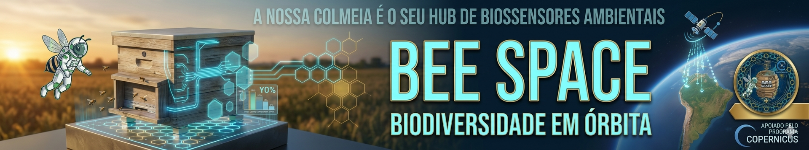
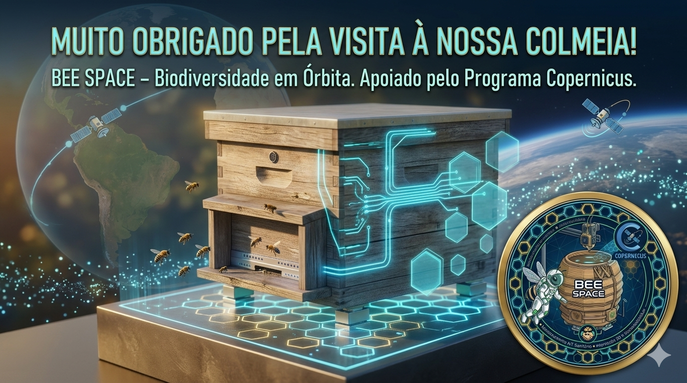
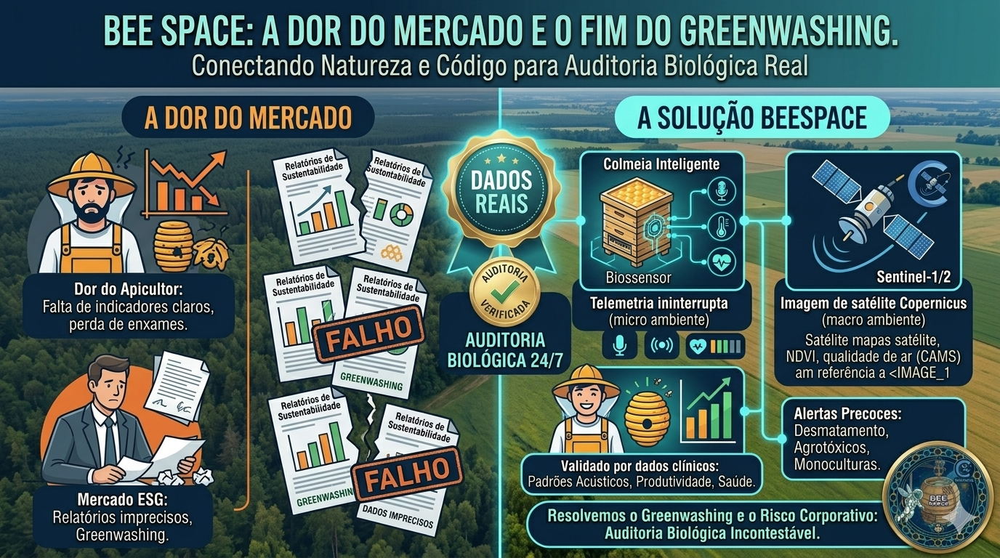
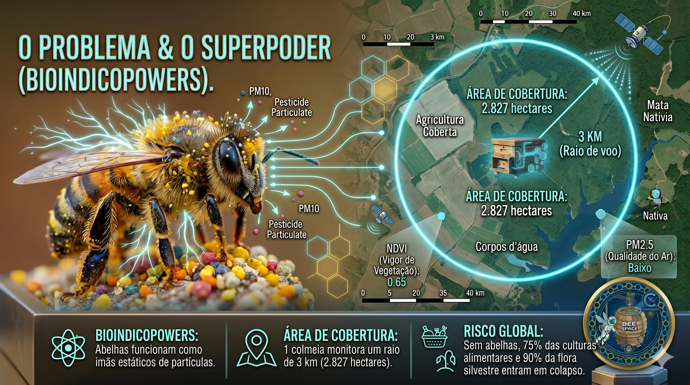
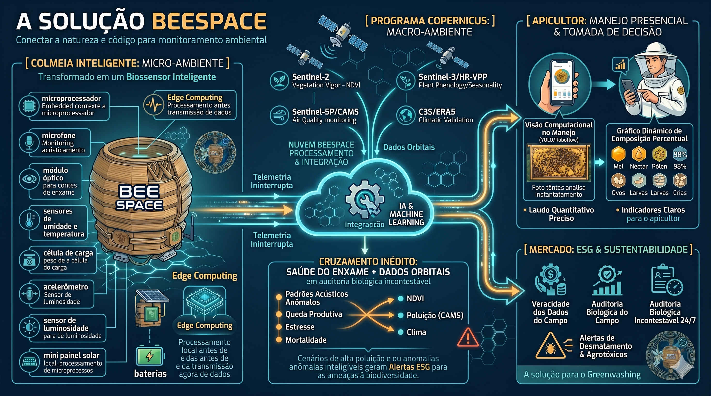
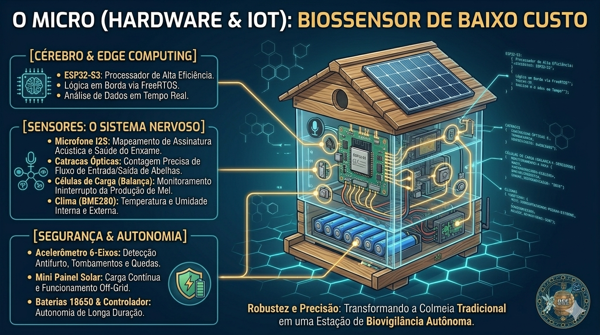
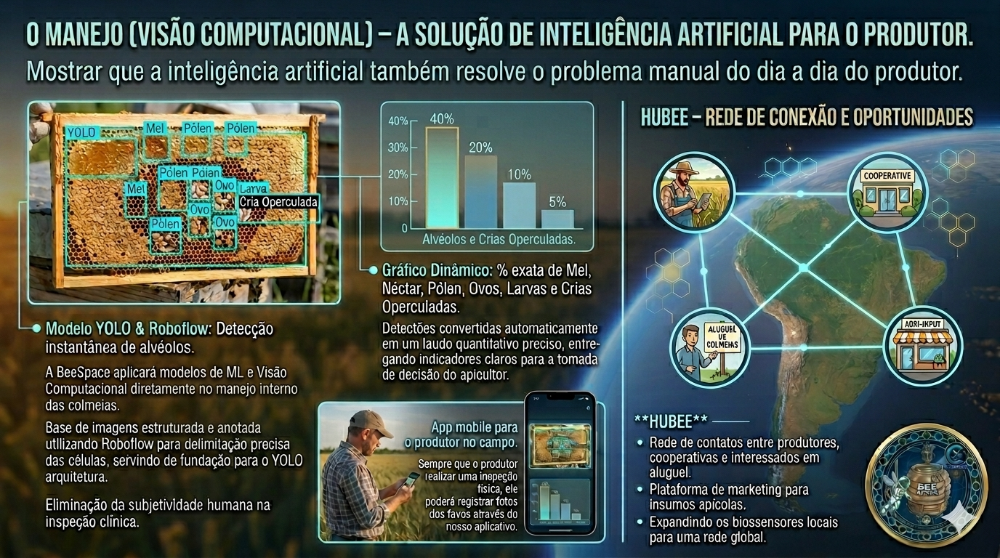
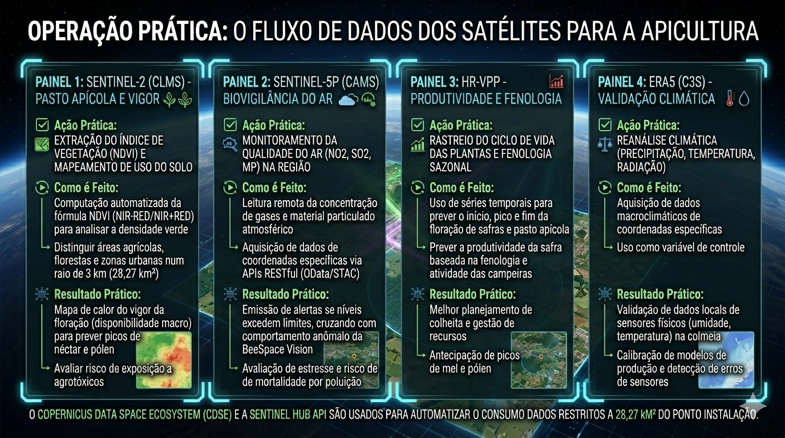
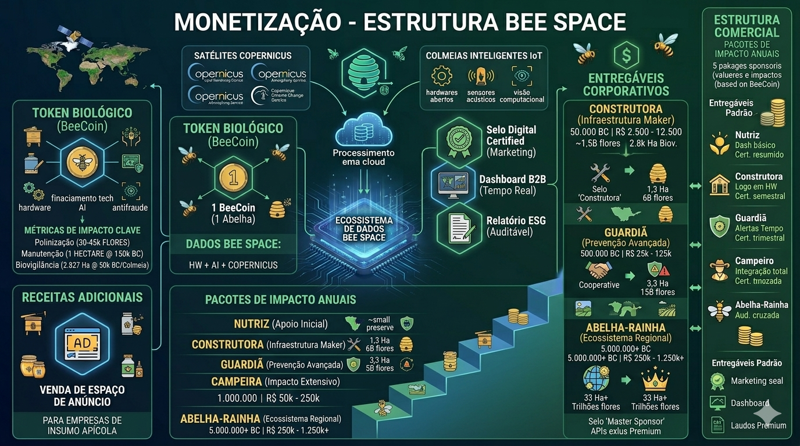

Apoiado pelo Programa Copernicus · IoT · IA · Dados Orbitais
A colmeia como hub de biossensores ambientais.
A BeeSpace transforma colmeias tradicionais em biossensores inteligentes para apoiar apicultores, monitorar biodiversidade e validar com dados reais o que acontece no campo — cruzando telemetria local, visão computacional e satélites Copernicus.
3 km de raio por colmeia
28,27 km² de cobertura monitorada
Alerta precoce contra risco ambiental


Visão do projeto
Sistemas embarcados, rede colaborativa, manejo assistido por IA e auditoria biológica verificável para produção apícola, segurança alimentar e conservação territorial.
Dor do mercado
Dados ambientais confiáveis ainda são raros no campo.
A proposta da BeeSpace nasce da necessidade real de produtores, meliponicultores e iniciativas de sustentabilidade que precisam de sinais confiáveis, contínuos e auditáveis.
Apicultores operam com pouca previsibilidade sobre saúde do enxame e floradas.
Mercado ESG sofre com coleta manual, relatórios frágeis e risco de greenwashing.
Falta integração prática entre sensores locais, validação clínica e leitura orbital.

Bioindicopowers
A colmeia funciona como uma estação meteorológica e biológica viva.
Os pelos ramificados das abelhas capturam partículas do ambiente, enquanto o comportamento do enxame revela sinais precoces sobre poluição, estresse e perda de biodiversidade.
Bioindicadores reais
Abelhas respondem a alterações de clima, água, flora, pressão química e equilíbrio ecológico.
Cobertura territorial
Cada colmeia monitora um raio de até 3 km, cobrindo 2.827 hectares do entorno.
Segurança alimentar
Polinizadores sustentam culturas agrícolas, flora nativa e cadeias de biodiversidade.

A solução BeeSpace
Do micro ao macro: uma arquitetura única para biovigilância ambiental.
A BeeSpace conecta natureza e código em uma cadeia contínua de coleta, interpretação e validação de dados ambientais e produtivos.
1
Microambiente instrumentado
Sensores embarcados acompanham acústica, peso, umidade, temperatura, luminosidade e eventos críticos da colmeia.
2
Manejo com visão computacional
Modelos YOLO e Roboflow transformam imagens dos favos em indicadores objetivos para decisão do produtor.
3
Macroambiente Copernicus
Sentinel-2, Sentinel-5P, HR-VPP e ERA5 adicionam contexto de vegetação, qualidade do ar, fenologia e clima.
4
Rede colaborativa
A plataforma conecta produtores, cooperativas, mercado e iniciativas de impacto em um ecossistema verificável.

Hardware & IoT
Um biossensor de baixo custo, robusto e autônomo.
A colmeia inteligente foi concebida para operar no campo com autonomia energética, processamento local e telemetria contínua.
ESP32-S3 com lógica em borda e processamento em tempo real
Microfone I2S para assinatura acústica e saúde do enxame
Catracas ópticas para fluxo de entrada e saída de abelhas
Balança com células de carga para produção e consumo
BME280, acelerômetro, luminosidade, painel solar e baterias

Visão computacional
A inteligência artificial também resolve o manejo do dia a dia.
O produtor registra imagens em campo e recebe laudos quantitativos padronizados, reduzindo subjetividade clínica na inspeção da colmeia.
MelNéctarPólenOvosLarvasCrias operculadas
Além da análise visual dos favos, a BeeSpace propõe uma rede de conexão e oportunidades entre produtores, cooperativas e parceiros, ampliando o uso dos biossensores em escala.

Operação prática
O fluxo de dados dos satélites chega à apicultura de forma acionável.
A plataforma automatiza consultas e recortes territoriais para cruzar os 28,27 km² de cada colmeia com sinais do microambiente e disparar alertas relevantes.
Sentinel-2 / CLMS para vigor da vegetação e mapeamento do pasto apícola
Sentinel-5P / CAMS para biovigilância do ar e cruzamento com anomalias do enxame
HR-VPP para produtividade e fenologia de culturas e floradas
C3S / ERA5 para validação climática das leituras físicas da colmeia

Modelo de impacto
Monetização conectada a resultado ambiental, operação e inteligência de dados.
O projeto combina infraestrutura de campo, dados auditáveis e entregáveis corporativos para sustentar a expansão da rede e gerar valor econômico com impacto real.
Pacotes anuais de impacto para diferentes perfis de adoção e escala territorial
Relatórios auditáveis, selo digital certificado e dashboard B2B em tempo real
Receitas complementares com dados BeeSpace, marketing e ecossistema de parceiros

Missão 2030
Construir uma rede distribuída de colmeias inteligentes para monitorar biodiversidade em escala territorial.
A BeeSpace se posiciona como infraestrutura de campo para segurança alimentar, conservação e rastreabilidade ambiental baseada em sinais reais.
Segurança alimentar
Fortalece polinização, produtividade apícola e agricultura mais resiliente.
Inovação aplicada
Une sistemas embarcados, IA, processamento em borda e integração territorial.
Ação climática
Cria inteligência ambiental com alertas sobre clima, poluição e pressão ecológica.
Vida terrestre
Ajuda a proteger biodiversidade, matas nativas e qualidade dos ecossistemas.
Enxame BeeSpace
Um time multidisciplinar para unir campo, ciência, IA e sustentabilidade.
A equipe apresentada no projeto combina apicultura, biologia, dados, engenharia e desenvolvimento de produto.
Yasmine Santos
Diretora Executiva
Marciano Bernardi
Diretor de Operações
Marcos Corino
Diretor de Tecnologia
Roger Silva
Diretor de Dados
Victor Mattos
Diretor de Desenvolvimento
Eduarda Marini
Diretora Científica
BeeSpace · Próximo passo
Vamos transformar monitoramento ambiental em evidência verificável de impacto.
Conheça a ideia completa, acompanhe a evolução do projeto e use esta landing page como vitrine pública da proposta BeeSpace.